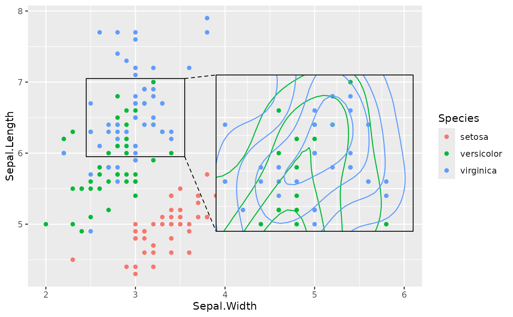

Use inset_theme() to add a suitable theme to a manually-created inset
plot. Use inset_blanks() to customize the default list of elements to
blank in the inset.
Arguments
- blank
Character vector of theme elements to blank. See
ggplot2::theme().- axes
String. Which axes to plot in the inset?
"","x","y"or"xy".- margin
Margin around the plot. See
plot.margininggplot2::theme().- ...
Character vector of extra elements to blank.
Value
inset_theme() returns a ggplot theme object. inset_blanks()
returns a character vector of theme element names.
Examples
library(ggplot2)
ggp <- ggplot(iris, aes(Sepal.Width, Sepal.Length, colour = Species)) +
geom_point() + xlim(c(2, 6))
from <- list(2.5, 3.5, 6, 7)
to <- list(4, 6, 5, 7)
blanks <- inset_blanks("panel.grid")
inset <- ggp + geom_density2d() + inset_theme(axes = "", blank = blanks)
ggp + geom_magnify(from = from, to = to, plot = inset)
